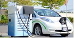
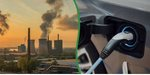
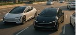
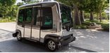
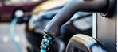

Every in-text citation on this website is listed in the APA 7th edition reference list below.
Weighs AV eco-driving savings, hardware energy use, platooning, and travel-rebound studies.

Summarizes EVIDA incentives, charging locations, and EV adoption challenges in the Philippines.

Explains zero tailpipe emissions, lower total GHG, air-quality, and circular-economy benefits of EVs.

Covers automation levels, how AVs work, benefits, and challenges such as cost, ethics, and regulation.

Reviews AV energy use, emissions, land use, rebound effects, and policy recommendations.
White paper reviewing evidence on the travel and environmental effects of AVs.

Reports Philippine electrified vehicle sales amid a wider market decline.
Babylon2k. (2025, September 1). Electric vehicles in the Philippines: What you need to know in 2025. https://babylon2k.org/electric-vehicles-in-the-philippines-what-you-need-to-know-in-2025/
Clean Air Asia. (2023). Comprehensive Roadmap for the Electric Vehicle Industry (CREVI) [2023 version submitted to DOE] [PDF]. https://cleanairasia.org/sites/default/files/2025-07/COMPREHENSIVE%20ROADMAP%20FOR%20THE%20ELECTRIC%20VEHICLE%20INDUSTRY%20%5B%202023%20version%20submitted%20to%20DOE%5D.pdf
Department of Energy. (2026, August 31). Accredited electric vehicle charging station (EVCS) providers as of 31 August 2026. Republic of the Philippines. https://doe.gov.ph/accredited-electric-vehicle-charging-station-evcs-providers-as-of-31-august-2026
Earth.Org. (2022, May 16). Environmental pros and cons of self-driving cars. https://earth.org/pros-and-cons-of-self-driving-cars/
International Energy Agency. (2024). Global EV outlook 2024. https://www.iea.org/reports/global-ev-outlook-2024
International Energy Agency. (2026). Global EV outlook 2026: Electric vehicle batteries. https://www.iea.org/reports/global-ev-outlook-2026/electric-vehicle-batteries
Land Transportation Office. (2023). Implementing rules and regulations of Republic Act No. 11697 (Electric Vehicle Industry Development Act) [PDF]. https://lto.gov.ph/wp-content/uploads/2023/09/IRR-RA11697.pdf
Manila Standard. (2026, August 12). July vehicles sales hit 2026 high of 42,880 units as EV sales surge. Manila Standard Business. https://manilastandard.net/business/314783299/july-vehicles-sales-hit-2026-high-of-42880-units-as-ev-sales-surge.html
National Highway Traffic Safety Administration. (n.d.). Automated driving systems 2.0: A vision for safety. https://www.nhtsa.gov/vehicle-manufacturers/automated-driving-systems
Recharged. (n.d.). Environmental impact of electric vehicles. https://recharged.com/learning/environmental-impact/environmental-impact-of-electric-vehicles
Republic Act No. 11697, An Act Providing for the Development of the Electric Vehicle Industry (2022). https://lawphil.net/statutes/repacts/ra2022/ra116972022.html
UK Department for Transport. (2024). Automated Vehicles Act implementation programme. https://www.gov.uk/guidance/automated-vehicles-act-implementation-programme
University of California, Davis, National Center for Sustainable Transportation. (n.d.). Environmental impacts of automated vehicles [White paper]. https://ncst.ucdavis.edu/project/environmental-impacts-automated-vehicles
University of Central Florida Online. (2025). What is the future of autonomous vehicles? https://www.ucf.edu/online/engineering/news/transportation-of-the-future/
Yucel, H. (2025, June 22). The environmental impacts of autonomous vehicles. Encyclopedia. https://encyclopedia.pub/entry/58523
Zapanta, L. K.-E. M. (2026, August 12). EVs continue to defy auto sales downturn. Inquirer Business. https://business.inquirer.net/607548/evs-continue-to-defy-auto-sales-downturn